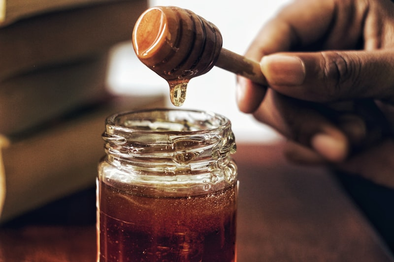
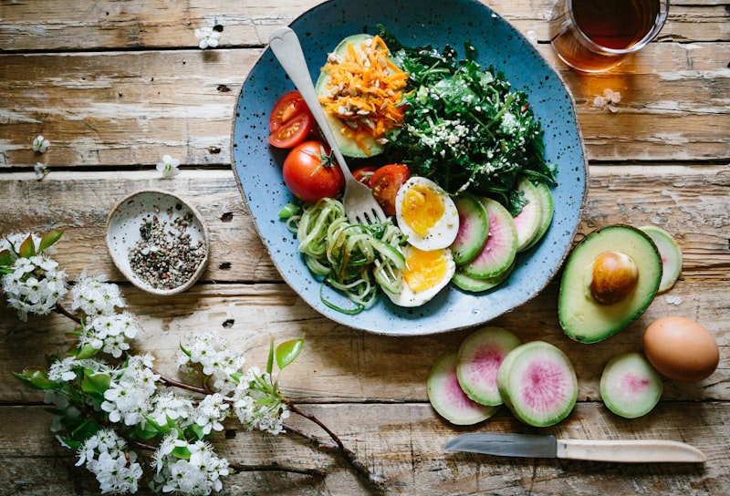
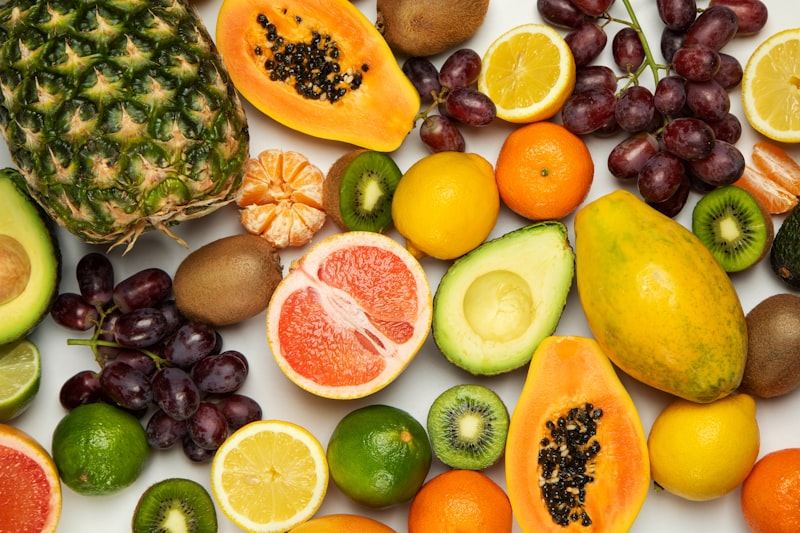

Desmontando las Mentiras que Sabotean tu Metabolismo
¿Cuántas veces escuchaste que los carbohidratos son el enemigo? ¿Que saltear comidas adelgaza? ¿Que la fruta engorda? ¿Que después de los 40 ya no hay nada que hacer?
Estas creencias no solo son falsas — son peligrosas. Cada mito que crees te aleja de la solución real y te mantiene atrapada en un ciclo de frustración, dietas extremas y resultados que nunca llegan.
La insulina es la hormona más incomprendida de tu cuerpo. No es tu enemiga — es tu aliada más poderosa cuando aprendes a trabajar CON ella en vez de contra ella.
En esta guía vas a descubrir:
• ❌ Los mitos más dañinos que probablemente crees sobre la insulina, el azúcar y tu metabolismo
• ✅ Las verdades científicas que nadie te explicó de forma simple
• 💡 Las acciones prácticas que realmente transforman tu equilibrio hormonal
Cada tarjeta tiene el formato MITO → VERDAD → QUÉ HACER, para que no solo entiendas, sino que actúes.
Prepárate para desaprender todo lo que te dijeron... y empezar de nuevo con la verdad.

💉 Mitos sobre la Insulina
La insulina es la hormona maestra de tu metabolismo. Pero la desinformación ha convertido esta aliada en un 'monstruo' que te genera miedo. Vamos a poner las cosas en su lugar.
- ❌ LO QUE CREES: La insulina almacena grasa y por eso engordas
- ✅ LA VERDAD: La insulina es una hormona de almacenamiento Y de uso de energía
- 💡 Cuando tu insulina funciona bien, tus células usan la glucosa como combustible
- 💡 El problema NO es la insulina — es la RESISTENCIA a la insulina
- 💡 La resistencia ocurre cuando tus células dejan de escuchar la señal de la insulina
- 💡 Entonces tu páncreas produce MÁS insulina → ahí sí se almacena más grasa
- Imagina la insulina como una llave: abre la puerta de tus células para que entre la energía
- Cuando hay resistencia, la llave no encaja bien → tu cuerpo produce más llaves (más insulina)
- La solución no es eliminar la insulina — es mejorar la sensibilidad de tus cerraduras (células)
- ¿Cómo? Ejercicio, fibra, proteína en cada comida, y sueño de calidad
- ❌ LO QUE CREES: Necesitar insulina significa que fallaste en cuidarte
- ✅ LA VERDAD: La insulina es una herramienta, no un castigo
- 💡 Tu páncreas puede necesitar ayuda por factores genéticos, no solo por hábitos
- 💡 La edad, los cambios hormonales y el estrés crónico afectan la producción de insulina
- 💡 Usar insulina cuando la necesitas PROTEGE tus órganos
- 💡 Muchas personas la usan temporalmente mientras mejoran sus hábitos
- La insulina es una hormona que tu propio cuerpo produce — darla externamente es natural
- No genera 'adicción' — es como darle lentes a alguien que no ve bien
- Si un profesional te la indica, es porque tu cuerpo la necesita en este momento
- Puedes usarla Y mejorar tus hábitos al mismo tiempo — no son excluyentes
- ❌ LO QUE CREES: Una vez que empiezas con insulina, nunca puedes dejarla
- ✅ LA VERDAD: La insulina no es una droga — es una hormona natural de tu cuerpo
- 💡 Tu páncreas produce insulina cada vez que comes — es parte normal de la digestión
- 💡 No hay dependencia química ni tolerancia creciente
- 💡 Muchas personas mejoran tanto sus hábitos que reducen o eliminan la insulina externa
- 💡 La decisión siempre la toma tu cuerpo y tu profesional de salud juntos
- La insulina no actúa en el cerebro como las drogas — actúa en tus células musculares, hepáticas y adiposas
- No necesitas 'más y más' con el tiempo — eso es mito
- Los cambios de estilo de vida pueden mejorar tanto la sensibilidad que la dosis baja
- Cada cuerpo es diferente: lo que funciona para una persona puede no funcionar igual para otra

🍬 Mitos sobre el Azúcar y los Carbohidratos
Los carbohidratos son la fuente de energía favorita de tu cerebro y tus músculos. Pero la demonización de los 'carbs' ha creado más confusión que soluciones. Veamos qué es real.
- ❌ LO QUE CREES: El azúcar está 100% prohibida si quieres estar saludable
- ✅ LA VERDAD: Puedes comer dulces ocasionalmente con estrategia inteligente
- 💡 La prohibición total genera: culpa, miedo, dietas extremas y atracones
- 💡 La clave no es 'nunca' — es CUÁNTO, CUÁNDO y CON QUÉ lo comes
- 💡 Un postre pequeño después de una comida con proteína causa mínimo impacto hormonal
- 💡 La obsesión con la perfección genera más estrés que un pedazo de pastel
- Regla inteligente: elige 1 postre (no 5), porción pequeña, después de comida completa
- Acompaña siempre con proteína o fibra — ralentizan la absorción del azúcar
- En celebraciones: come normal antes (no llegues muerta de hambre) + 1 postre + agua
- Al día siguiente: rutina normal, sin 'castigos' ni ayunos compensatorios
- ❌ LO QUE CREES: Si evitas el azúcar de mesa, tu glucosa estará bien
- ✅ LA VERDAD: TODOS los carbohidratos se convierten en glucosa en tu sangre
- 💡 Pan, arroz, pasta, papas, frutas, tortillas → TODOS son carbohidratos
- 💡 Tu cuerpo no distingue entre 'azúcar de postre' y 'azúcar de arroz blanco'
- 💡 Lo que importa es el TOTAL de carbohidratos del plato, no solo el azúcar añadido
- 💡 Un plato de arroz blanco puede subir tu glucosa más que un cuadrito de chocolate
- Aprende a identificar carbohidratos: pan, arroz, pasta, fruta, papa, tortilla, leche
- No los elimines — controla la PORCIÓN y COMBÍNALOS con proteína + grasa + fibra
- El método del plato: ½ vegetales + ¼ proteína + ¼ carbohidrato = equilibrio perfecto
- Lee etiquetas: busca 'carbohidratos totales', no solo 'azúcar'
- ❌ LO QUE CREES: Para adelgazar y equilibrar hormonas hay que eliminar los carbs
- ✅ LA VERDAD: Tu cerebro necesita 120g de glucosa al día solo para funcionar
- 💡 Sin carbohidratos suficientes: niebla mental, fatiga, mal humor, antojos extremos
- 💡 Las dietas ultra-bajas en carbs elevan el cortisol (hormona del estrés)
- 💡 El cortisol alto desregula tiroides, insulina, leptina y progesterona
- 💡 La solución: elegir MEJORES carbohidratos, no eliminarlos
- Carbohidratos inteligentes: avena, legumbres, camote, frutas enteras, quinoa
- Carbohidratos a limitar: pan blanco, arroz blanco, jugos, galletas, cereales azucarados
- Incluye carbohidratos en CADA comida — tu cuerpo los necesita para producir serotonina
- La serotonina (hormona del bienestar) se produce A PARTIR de carbohidratos — sin carbs, no hay felicidad hormonal
- ✅ ESTO SÍ ES CIERTO: Las bebidas con azúcar son la peor fuente de carbohidratos
- 💡 Un refresco tiene ~40g de azúcar que llega a tu sangre en MINUTOS
- 💡 Los jugos 'naturales' sin fibra actúan casi igual que un refresco en tu glucosa
- 💡 Las bebidas no dan saciedad — bebes calorías vacías sin sentirte llena
- 💡 Tu páncreas recibe un golpe de glucosa tan rápido que dispara un pico masivo de insulina
- Swap #1: Refresco → Agua con gas + limón + hierbabuena
- Swap #2: Jugo de naranja → Naranja entera (con su fibra)
- Swap #3: Té dulce → Té verde o de canela sin azúcar
- Swap #4: Bebida energética → Café negro con un toque de canela

🥗 Mitos sobre las Dietas y el Ayuno
Las dietas milagro y los ayunos extremos prometen resultados rápidos, pero la ciencia muestra que muchas de estas prácticas sabotean tu metabolismo hormonal. Descubre por qué.
- ❌ LO QUE CREES: Si como menos veces, bajo de peso más rápido
- ✅ LA VERDAD: Saltear comidas dispara tus hormonas del estrés y FRENA tu metabolismo
- 💡 Cuando no comes por muchas horas, tu hígado libera glucosa almacenada
- 💡 Tu cuerpo interpreta el ayuno como 'peligro' y sube el cortisol
- 💡 El cortisol alto hace que tu cuerpo GUARDE grasa en vez de quemarla
- 💡 Además, llegas a la siguiente comida con hambre extrema y comes el doble
- Come cada 3-4 horas — tu metabolismo necesita combustible constante para funcionar
- 3 comidas principales + 1-2 snacks con proteína = glucosa estable todo el día
- Nunca saltes el desayuno — después de 8h de ayuno nocturno, tu cuerpo necesita energía
- Si no tienes hambre en la mañana, empieza con algo pequeño: yogur + nueces o un smoothie
- ❌ LO QUE CREES: Un suplemento, té, fruta o protocolo de 7 días puede 'curar' todo
- ✅ LA VERDAD: No hay cura mágica — hay CONTROL a través de hábitos consistentes
- 💡 Desconfía de quien promete: 'cura en 7 días', 'con este solo ingrediente'
- 💡 Si suena demasiado bueno para ser verdad, probablemente no es verdad
- 💡 La resistencia a la insulina se REVIERTE con hábitos sostenidos, no con píldoras
- 💡 El cambio real toma semanas, no días — y eso está bien
- Señales de estafa: 'cura milagrosa', 'sin esfuerzo', 'compra antes de que se acabe'
- Lo que SÍ funciona: alimentación consistente + movimiento + sueño + manejo del estrés
- No necesitas perfección — necesitas consistencia del 80% durante meses
- Busca apoyo profesional real (nutricionista, médico) antes de gastar en 'suplementos mágicos'
- ❌ LO QUE CREES: La grasa es mala y hay que eliminarla para perder peso
- ✅ LA VERDAD: Las grasas saludables son ESENCIALES para tu equilibrio hormonal
- 💡 Tus hormonas (estrógeno, progesterona, testosterona) se PRODUCEN a partir de grasa
- 💡 Sin grasa suficiente, tu cuerpo no puede fabricar hormonas correctamente
- 💡 Las grasas saludables retardan la digestión → glucosa sube más lento → insulina estable
- 💡 Los productos 'light' o '0% grasa' suelen tener MÁS azúcar para compensar el sabor
- Grasas que SÍ: aguacate, aceite de oliva, nueces, semillas, pescado graso (salmón, sardinas)
- Grasas que LIMITAR: frituras, margarina, aceites vegetales ultraprocesados
- Agrega 1 fuente de grasa saludable a cada comida: aguacate en el almuerzo, nueces en el snack
- Lee etiquetas de productos 'light' — muchos cambian grasa por azúcar (peor para tu insulina)
- ❌ LO QUE CREES: Si comí mucho en una fiesta, ayuno al día siguiente para compensar
- ✅ LA VERDAD: Los ayunos de castigo desregulan más tus hormonas
- 💡 El ayuno después de un exceso genera un ciclo: exceso → castigo → hambre → exceso
- 💡 Tu metabolismo no funciona como una calculadora de calorías día a día
- 💡 El estrés de la culpa + el ayuno sube el cortisol más que la comida extra
- 💡 Un día de exceso entre 30 días de buenos hábitos NO cambia nada hormonalmente
- Después de una fiesta o exceso: al día siguiente come NORMAL (no ayunes ni restrinjas)
- Desayuna con proteína y vegetales — tu cuerpo necesita volver a su ritmo, no al vacío
- Camina 15-20 minutos — el movimiento suave ayuda a normalizar la glucosa sin estrés
- Suelta la culpa — el estrés hormonal de sentirte culpable hace más daño que el postre

🍎 Mitos sobre las Frutas
Las frutas son uno de los alimentos más injustamente castigados por la moda anti-carbohidratos. Vamos a rescatar su reputación con hechos, no con miedos.
- ❌ LO QUE CREES: Las frutas tienen mucha azúcar y hay que evitarlas
- ✅ LA VERDAD: La fruta entera tiene fibra, agua, vitaminas y antioxidantes que la hacen única
- 💡 La fibra de la fruta forma un 'gel' que frena la absorción del azúcar natural
- 💡 Una manzana tiene ~19g de carbohidratos + fibra → absorción lenta y controlada
- 💡 Una galleta tiene ~20g de carbohidratos SIN fibra → absorción rápida, pico de insulina
- 💡 ¿Mismo azúcar, efecto totalmente diferente? Sí — la FIBRA cambia todo
- Come la fruta ENTERA — no en jugo. La fibra es la clave de la diferencia
- Las mejores: manzana, naranja, pera, frutos rojos, kiwi (altas en fibra, IG bajo)
- Combina fruta con proteína o grasa: manzana + mantequilla de maní = snack hormonal perfecto
- 2-3 porciones de fruta al día es ideal — no la elimines, la necesitas
- ❌ LO QUE CREES: Un jugo de naranja natural es tan bueno como comer la naranja
- ✅ LA VERDAD: El jugo pierde la fibra y concentra el azúcar → golpe de glucosa
- 💡 Para 1 vaso de jugo necesitas 3-4 naranjas — bebes 4x más azúcar en minutos
- 💡 La naranja entera: 12g de azúcar + fibra = absorción en 30-45 minutos
- 💡 Jugo de 4 naranjas: 48g de azúcar SIN fibra = absorción en 5-10 minutos
- 💡 Tu páncreas recibe 4x más trabajo en 6x menos tiempo
- Swap: jugo de naranja → naranja pelada a gajos (mismo sabor, con fibra)
- Si quieres batido: licúa la fruta ENTERA con su fibra, no la cueles
- Agrega vegetales al batido (espinaca, pepino) — baja el impacto glucémico
- Jugo solo para emergencias de glucosa baja — ahí sí su absorción rápida es una ventaja
- ✅ ESTO SÍ ES CIERTO: Las frutas secas concentran el azúcar al perder el agua
- 💡 100g de uvas = 16g de azúcar + mucha agua → te llenas rápido
- 💡 100g de pasas = 59g de azúcar sin agua → comes más sin darte cuenta
- 💡 La fruta seca es nutritiva (tiene fibra, hierro, potasio) pero la porción debe ser PEQUEÑA
- 💡 Un puñado pequeño (30g) es la porción correcta — no un paquete entero
- Porción inteligente: lo que cabe en la palma de tu mano cerrada (no más)
- Combínala con nueces: dátil + nuez = snack con proteína + grasa + dulzor natural
- Úsala como 'condimento' en ensaladas o avena — no como snack ilimitado
- Si necesitas dulce: 2-3 dátiles con mantequilla de maní > cualquier barra de caramelo

⚡ Mitos sobre el Metabolismo y el Peso
Después de los 40, tu metabolismo cambia — pero no de la forma que crees. Estos mitos te tienen atrapada en estrategias que no funcionan. Es hora de entender cómo funciona realmente.
- ❌ LO QUE CREES: Mi metabolismo ya murió y no hay nada que hacer
- ✅ LA VERDAD: Tu metabolismo cambió, no murió — necesita una estrategia diferente
- 💡 Antes de los 40: las calorías mandaban → menos calorías = más resultado
- 💡 Después de los 40: las HORMONAS mandan → equilibrio hormonal = resultado
- 💡 La caída de estrógeno y progesterona cambia DÓNDE y CÓMO almacenas grasa
- 💡 Lo que funcionaba a los 25 ya no funciona — pero hay estrategias nuevas que SÍ
- Prioriza PROTEÍNA en cada comida — preserva músculo, que es tu motor metabólico
- Incluye entrenamiento de fuerza (pesas, bandas, peso corporal) — el músculo quema más calorías en reposo
- Cuida tu sueño como prioridad #1 — la hormona del crecimiento se produce mientras duermes
- Reduce el estrés crónico — el cortisol alto después de los 40 es el principal almacenador de grasa abdominal
- ❌ LO QUE CREES: Solo un workout intenso de 1 hora sirve para adelgazar
- ✅ LA VERDAD: Movimientos cortos y consistentes son más efectivos para tu insulina
- 💡 Caminar 10 minutos después de cada comida BAJA tu glucosa hasta un 30%
- 💡 Los músculos absorben glucosa sin necesidad de insulina cuando se mueven
- 💡 El ejercicio extremo en ayunas puede SUBIR tu cortisol y empeorar la resistencia
- 💡 La consistencia diaria supera la intensidad esporádica — siempre
- Regla de oro: 10 minutos de caminata después de cada comida principal (3x al día)
- Agrega 2-3 sesiones semanales de fuerza (20-30 min) — construye músculo que quema grasa 24/7
- Sube escaleras en vez del ascensor — pequeños movimientos acumulados hacen diferencia
- Baila 1 canción entre actividades — movimiento no tiene que ser 'ejercicio formal'
- ❌ LO QUE CREES: Si como bien, mi glucosa estará perfecta
- ✅ LA VERDAD: Hay al menos 10 factores que suben tu glucosa además de la comida
- 💡 Poco sueño → menos sensibilidad a la insulina + más cortisol
- 💡 Estrés crónico → el cortisol libera glucosa almacenada en el hígado
- 💡 Deshidratación → la glucosa se concentra más en sangre con menos agua
- 💡 Enfermedad o inflamación → el cuerpo eleva glucosa como respuesta de defensa
- SUEÑO: acuéstate y levántate a la misma hora — tu cuerpo ama la rutina hormonal
- ESTRÉS: respira 4-4-6 (inhala 4 seg, sostén 4, exhala 6) — baja cortisol en 2 minutos
- AGUA: 8 vasos diarios mínimo — la deshidratación leve concentra tu glucosa
- MOVIMIENTO: pausas de 5 min cada hora sentada — tus músculos necesitan activarse
- ✅ ESTO SÍ ES CIERTO: El sedentarismo es un factor independiente de resistencia a la insulina
- 💡 Estar sentada más de 8 horas seguidas reduce la sensibilidad a la insulina hasta un 40%
- 💡 Tus músculos 'se apagan' cuando no se mueven — dejan de absorber glucosa
- 💡 Después de 60 minutos sentada, tu metabolismo baja significativamente
- 💡 Una pausa activa de 5 minutos cada hora REVIERTE parcialmente este efecto
- Alarma cada 60 minutos: levántate, camina al baño, estira, sube escaleras
- Reuniones de pie o caminando — tu glucosa te lo agradecerá
- Escritorio de pie alternado con sentada — variar postura activa músculos diferentes
- Después del almuerzo: NO te sientes a revisar el celular — camina 10 minutos primero

💡 Verdades que Transforman
Después de derribar los mitos, aquí están las verdades científicas más poderosas para tu equilibrio hormonal. Estas son las acciones que REALMENTE funcionan.
- ✅ DESCUBRIMIENTO CLAVE: Comer vegetales PRIMERO reduce el pico de glucosa hasta un 30%
- 💡 Orden ideal: 1° Vegetales/ensalada → 2° Proteína → 3° Carbohidrato
- 💡 La fibra de los vegetales forma una 'barrera' en tu intestino que frena la absorción
- 💡 La proteína estimula hormonas de saciedad ANTES de que llegue el carbohidrato
- 💡 El mismo plato, mismos ingredientes, mismo tamaño — pero con resultado hormonal diferente
- 💡 Este simple cambio no requiere eliminar NADA de lo que te gusta
- Empieza SIEMPRE con la ensalada o los vegetales del plato — cómelos primero
- Luego la proteína (pollo, pescado, huevo, legumbres) — segundo
- Finalmente el carbohidrato (arroz, pan, pasta, papa) — al final
- En restaurantes: pide la ensalada como entrada y come antes que llegue el plato principal
- ✅ CADA PERSONA ES DIFERENTE: No hay una dieta universal que funcione para todas
- 💡 El mismo alimento puede subir la glucosa diferente en dos personas
- 💡 Tu genética, microbiota, nivel de estrés y hormonas hacen tu respuesta ÚNICA
- 💡 La mejor 'dieta' es la que descubres observando TU cuerpo
- 💡 Mide → observa → aprende → ajusta = tu ciclo de mejora continua
- Observa: ¿qué comida te da energía estable? ¿cuál te deja cansada a las 2 horas?
- Experimenta: ¿el arroz blanco te afecta más que la pasta? ¿el desayuno dulce o salado te funciona mejor?
- Aprende tus patrones: quizás el estrés te afecta más que la comida en ciertos días
- Ajusta: con el tiempo construyes TU protocolo personalizado — no el de una influencer
- ✅ LA CIENCIA ES CLARA: La consistencia del 80% supera a la perfección del 100%
- 💡 3 comidas con proteína al día × 365 días = 1,095 decisiones hormonales correctas
- 💡 Caminar 10 min después de comer × 365 = 60+ horas de ejercicio hormonal al año
- 💡 Dormir 7-8 horas × 365 = 2,555+ horas de restauración hormonal
- 💡 Estos 'pequeños' hábitos acumulados son MÁS poderosos que cualquier dieta de moda
- Elige 1 hábito nuevo por semana — no intentes cambiar todo de una vez
- Semana 1: proteína en el desayuno. Semana 2: caminata de 10 min después del almuerzo
- Semana 3: agua en vez de refrescos. Semana 4: acostarte 30 min antes
- En 4 semanas tienes 4 hábitos que transforman tu metabolismo — sin dieta extrema
- PASO 1 ➜ Come cada 3-4 horas con proteína en cada comida
- PASO 2 ➜ Camina 10 minutos después de cada comida principal
- PASO 3 ➜ Empieza tus comidas con vegetales/ensalada PRIMERO
- PASO 4 ➜ Duerme 7-8 horas con horario consistente
- PASO 5 ➜ Suelta la perfección — el 80% consistente es mejor que el 100% estresado
- No intentes los 5 pasos a la vez — agrega 1 por semana
- Cada paso que domines es una capa más de protección hormonal
- En 5 semanas tendrás un sistema completo que funciona en automático
- Si fallas un día, no importa — mañana es una nueva oportunidad de 80%